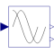

SinCosEvaluationEvaluation of the signals of a sin-cos-resolver |

|
Diagram
{kind=link}
Information
This information is part of the Modelica Standard Library maintained by the Modelica Association.
The sin-cos-resolver provides four tracks:
- cosine
- minus sine
- sine
- minus cosine
All four tracks have the same amplitude and the same offset > amplitude. Offset is used to detect loss of a track. To remove offset, (minus sine) is subtracted from (sine) and (minus cosine) from (cosine), resulting in a cosine and a sine signal with doubled amplitude but without offset.
Interpreting cosine and sine as real and imaginary part of a phasor, one could calculate the angle of the phasor (i.e., transform rectangular coordinates to polar coordinates). This is not very robust if the signals are superimposed with some noise. Therefore the phasor is rotated by an angle that is obtained by a controller. The controller aims at imaginary part equal to zero. The resulting angle is continuous, i.e. differentiating the angle results in 2*π*frequency. If desired, the angle can be wrapped to the interval ]-π, +π].
If the sin-cos-resolver provides one period of the tracks during a rotation of 2π/p, the result is the angle with respect to one pole pair and can be directly used for field oriented control.
Connectors (3)
| u |
Type: RealInput[4] Description: Signal from sin-cos-resolver |
|
|---|---|---|
| phi |
Type: RealOutput Description: Angle |
|
| w |
Type: RealOutput Description: Angular velocity |
Components (5)
| feedbackCos |
Type: Feedback |
|
|---|---|---|
| feedbackSin |
Type: Feedback |
|
| rotator |
Type: Rotator |
|
| integrator |
Type: Integrator |
|
| der1 |
Type: Der |
Used in Examples (1)
|
Modelica.Electrical.Machines.Examples.SynchronousMachines Test example: PermanentMagnetSynchronousMachine fed by FOC |